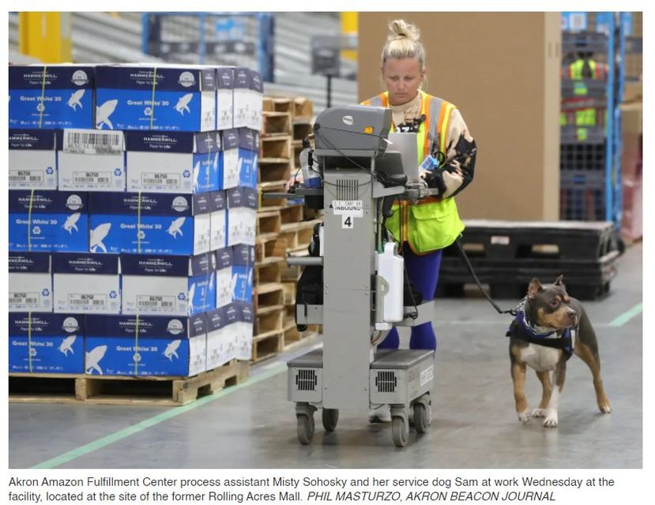

Timeline photos
There is a good article today in the Beacon Journal about working at the Romig Road Amazon warehouse.
I personally know several people that work there. They all have said they like it.
They all said they like the 3 12 hour shifts they work a week. That allows them to work another job. They all said it's a lot of exercise (some see that as good and some see that as difficult). And they all said that there are good perks and people are treated well.
5000 people work there. And I think the people I know are making about $18/hour, or more. Overtime is paid really well.
But here's the thing... that doesn't mean we should stop applying pressure on Amazon to continue to do even better for their employees.
ALL our businesses and governments and organizations are here to serve US. Not the other way around.
For example, I am thankful we have the Beacon Journal. And I consider Phil who took this picture, a friend. I also feel close to several reporters. But that doesn't mean I am going to stop saying that ALL people on Food Stamps should get a free subscription to the digital version of the paper. It used to be that someone would buy a newspaper and then throw it in the trash. Then someone else, who couldn't afford the paper, could pick it up and read it. Not any more. If you want access to the news you need a credit card and disposable income. How many people working at Amazon can afford to read the article their employer is featured in? Can Misty afford the newspaper? THE AKRON BEACON JOURNAL IS ONLY LETTING RICH PEOPLE BE EDUCATED ABOUT CURRENT EVENTS IN OUR CITY.
WE MUST STOP CANCELING PEOPLE who call out the CDC, the police, our politicians, Amazon, the Catholic Church... on and on.
There is nothing more American than being able to yell and shout and protest against corrupt and oppressive power players in our country (which is pretty much every single organization I can possibly think of).
Take @[739631612:2048:Shammas Malik] (watch, he'll untag this). The only thing Shammas ever talks to me about is that I'm rude, loud and not polite. FUCK YOU SHAMMAS. (You see what I did there. He's a politician who I think is too uppity for his own good. I'm being a good American by calling out Shammas. Yes, it is hurtful to a fairly gentle and shy man. But he's in power and likely will climb the political ladder.) The fact the matter is, Shammas is one of the very few politicians in Akron that isn't afraid of the mayor. I mostly love the way he votes. And honestly, I kinda like the guy.
We have to stop this childish game we're playing right now where we have to show complete loyalty to the powerful people and organizations that we support. Calling out the weaknesses in your political party, in your church, in your city, in your country makes them stronger and better. And ultimately, who is in a better position to call out a group than the people in the group?